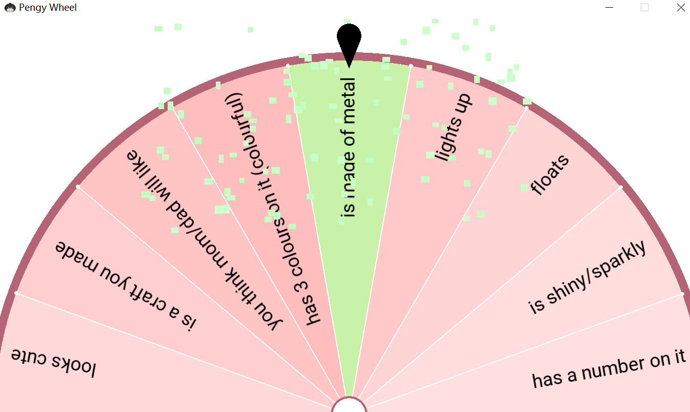
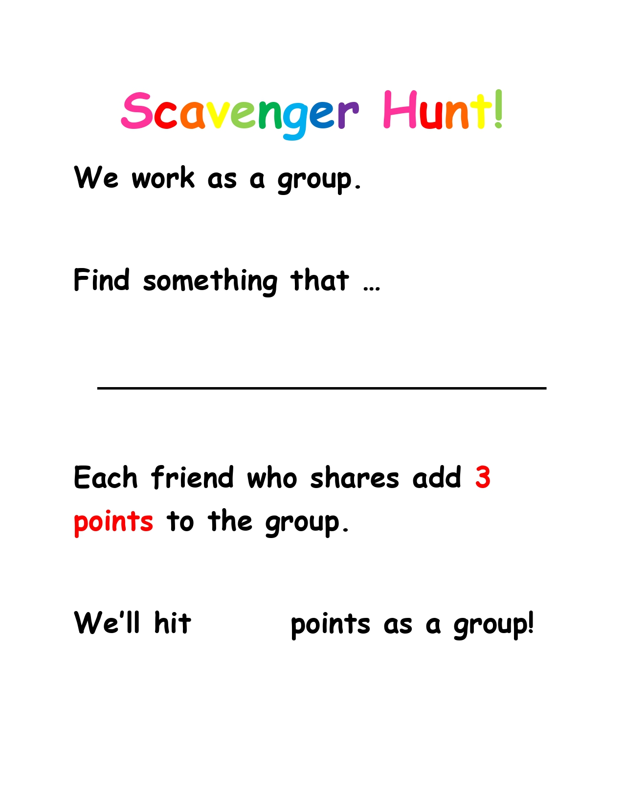
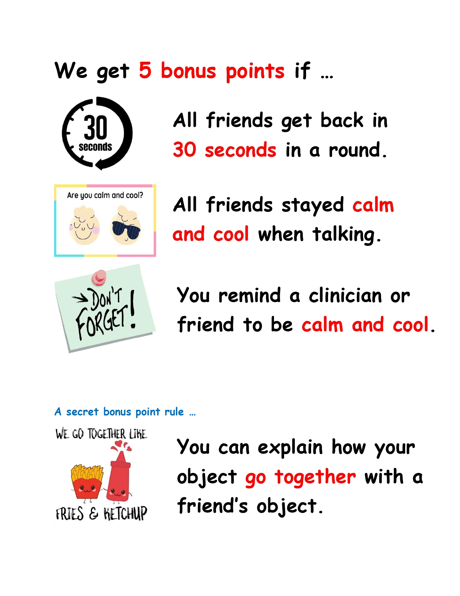

。Clinical Resources
<< Group Activity: Virtual Scavenger Hunt
During my placement virtually working with children who stuttered, I developed this scavenger hunting activity in conjunction with my clinical partners.
During this collaborative group activity, children were asked to search their room and find something that met the requirement. For example, "something that is red." The descriptor word was randomly selected from a wordlist by a random picker designed by Meep.

I reviewed the rules with the children, emphasizing time management and tension management, which were important in a group activity and for children who tended to stutter more under stress. I also added a bonus point rule when children could explain how their object went together with a friend's object to promote their complex language formulation. See the visuals I designed to explain the rules.
 
During the activity, our clinical team worked together to give visual and verbal cues for the children to use fluency shaping skills. The activity took 15-20 minutes. The children were highly motivated to participate. Although this activity was designed for children who stutter, it can definitely be adapted for other populations.
Should you have any questions regarding this activity, please feel free to contact me.